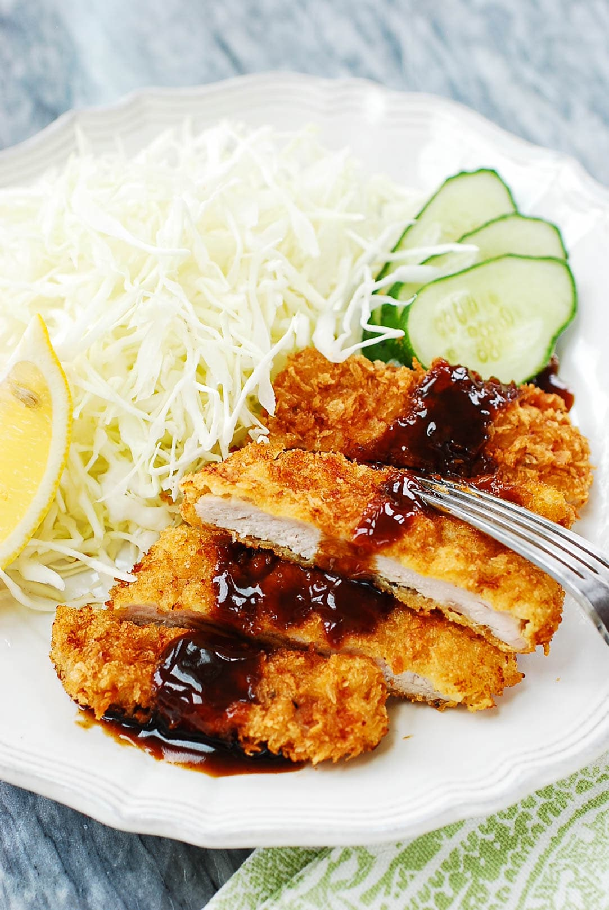
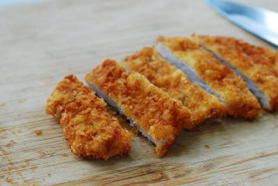

Tonkatsu

Tonkatsu is a panko breaded, deep-fried pork cutlet. It's crispy deliciousness you can easily make at home.
Ingredients
- 4 pork loin chops about 1/2 inch thick
- 1 tablespoon grated ginger
- Salt and pepper
- 2 eggs or 1 extra large egg, beaten
- 4 tablespoons all purpose flour
- 1 cup panko bread crumbs
- Oil for frying
- 1/4 head green cabbage
- 1 lemon - optional for cabbage and garnish
- Few cucumber slices
- Bottled tonkatsu sauce
Instructions
- Trim off fat from pork. Make a few slits without cutting through the meat. Then pound the meat with a meat pounder until desired thinness is achieved.
- Squeeze out the juice from the grated ginger and drizzle over the meat, and lightly sprinkle with salt and pepper
- Thinly slice the cabbage leaves, and soak in cold water with a couple slices of lemon. Drain well before serving
- Place the flour and breadcrumbs in two separate plates, and the egg in a shallow bowl.
- Dredge the meat in flour, shaking off excess flour. Dip in the egg, and then dredge in the breadcrumbs, pressing down gently on the meat for a good coating of breadcrumbs. Repeat for the remaining pieces
- Add 4 cups of oil to a deep fryer, wok or a deep pan. Heat over high heat to 325°F. Drop the meat in the oil. Do not fry more than 2 pieces at a time. Cook until lightly golden brown, flipping once, about a minute each side. The cooking time will depend on the thickness of the meat.
- Remove, and drain on a wire rack or paper towel. Reheat the oil to 325°F. Add the meat and deep fry again for a minute until lightly golden brown. Drain on a wire rack or drain on paper towel again.
- Cut each cutlet into small pieces and serve on plate with cabbage slaw with optional lemon and cucumber slices for garnish. Serve hot with the katsu along with rice and kimchi, if desired.

Source
Back to Home